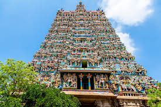
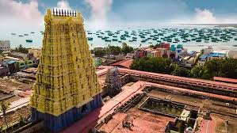
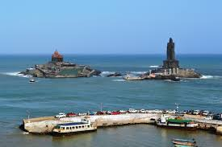
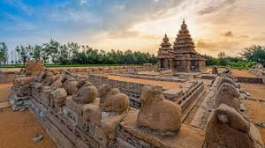
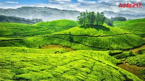

Madurai

One of the oldest continuously inhabited cities in the world, famous for the majestic Meenakshi Amman Temple, a stunning example of Dravidian architecture with towering gopurams.
Rameshwaram

A sacred pilgrimage island town, part of the Char Dham pilgrimage. It's home to the Ramanathaswamy Temple and the starting point of the iconic Pamban Bridge.
Kanyakumari

The southernmost tip of mainland India, famous for its stunning sunrises and sunsets over the ocean, and the Vivekananda Rock Memorial and Thiruvalluvar Statue, situated offshore.
Mahabalipuram

A UNESCO World Heritage Site featuring a group of 7th and 8th-century monuments, including the Shore Temple and the Five Rathas, renowned for their rock-cut architecture.
Ooty

A popular hill station nestled in the Nilgiri Hills, famous for its scenic beauty, botanical gardens, lakes, and the nostalgic Nilgiri Mountain Railway (a UNESCO World Heritage Site).